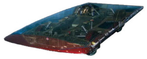

Radiance represents a major leap for the team with several new technologies including a monocoque carbon fibre chassis, NiMH batteries and a new shape. After competing in Sunrayce ’99, the team replaced the array with new, high-efficiency cells for WSC ’99 in Australia. Radiance also traveled over 7000 km across Canada during SunTrek 2000.
Past Results
Sunrayce ’99
- Second Overall
- Best Canadian Finish
World Solar Challenge ’99
- 2nd Place Finish, less than 15 minutes behind the winner
- Best university team and North American team in this event
SunTrek 2000
- Radiance traveled 7044 km across Canada to enter the Guinness Book of World Records

Vehicle Specifications
| Length | 4.8m | Aeroshell | carbon fibre , kevlar/nomex construction |
| Width | 1.96m | Chassis | Carbon Fibre Monocoque |
| Height | 0.90m | Suspension | Double A-arm with custom shocks |
| Wheelbase | 1.5m | Steering | pull/pull cable steering to slider |
| Vehicle Weight | 320 kg (704 lbs) | Brakes | modified mountain- bike disk brakes |
| Wheels | 4 custom Aluminum Wheels | Drag Co- efficient |
0.1 |
| Tires | Michelin Custom tires | Solar Array | ~ 4500 SunPower 20.5% efficient cells |
| Top Speed | 125 km/h | Array Power |
1300W nominal output |
| Motor | 5.6 kW (8hp) in hub motor | Batteries | 70 kg (154 lbs), small cell NiMH (6.2 kWh) |